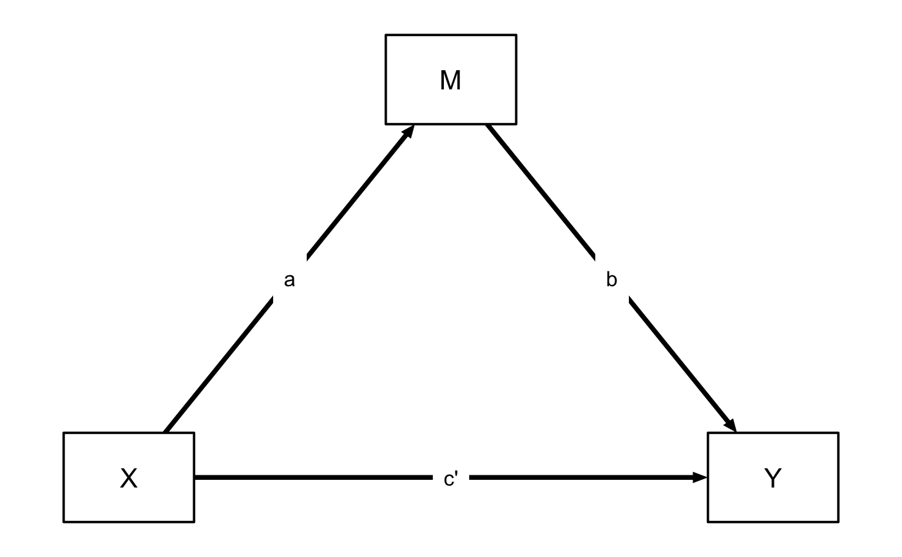

Plots a path diagram for an estimated multilevel mediation model.
mlm_path_plot(
mod = NULL,
xlab = "X",
ylab = "Y",
mlab = "M",
level = 0.95,
random = TRUE,
text = FALSE,
id = NULL,
digits = 2,
...
)A Stanfit model estimated with mlm().
Label for X
Label for Y
Label for M
"Confidence" level for credible intervals. (Defaults to .95.)
Should the "random" effects SDs be displayed? (Default = TRUE)
Should additional parameter values be displayed? (Defaults to FALSE.)
Plot an individual-level path diagram by specifying ID number.
Number of significant digits to show on graph. (Default = 2.)
Other arguments passed on to qgraph::qgraph().
A qgraph object.
Plots a path diagram of the mediation model,
with estimated parameter values and credible intervals. Can also
be used to draw a template diagram of the mediation model by not
specifying input to the mod argument.
To modify various settings of the underlying qgraph object, see
qgraph.
# Draw a template path diagram of the mediation model
mlm_path_plot()
